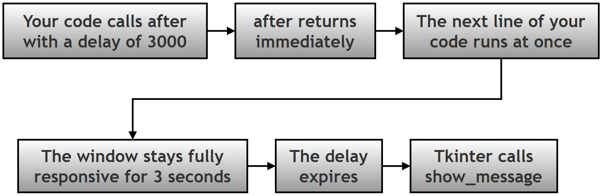
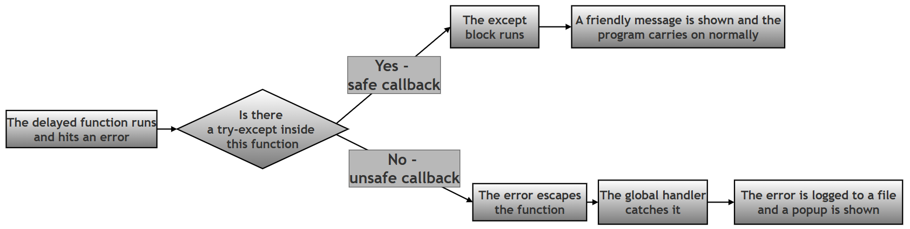
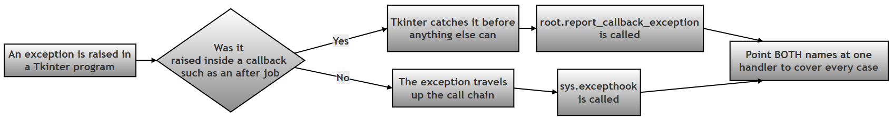

Safe and Unsafe Delayed Callbacks in Tkinter — Worked Answer¶
Table of Contents¶
- About This Page
- Research / Project Question
- Answer to Part A — Theory
- The Tkinter Trap: Making the Unsafe Button Actually Work
- Answer to Part B — The Model Script
- Flowchart
- Common Errors and How to Fix Them
- Summary of Changes Made to This Page
About This Page¶
This page is part of the extended, GitHub-only material that accompanies Chapter 14 (Tkinter and GUI Programming) of the printed textbook. It contains one of the chapter's research and project questions, followed by a complete worked answer: the theory, a full model program with both a deliberately unsafe and a deliberately safe version of the same task, and a troubleshooting guide.
The idea at the centre of this page is a simple one with far-reaching consequences. When you schedule a function to run later with after(), you are handing a piece of work to Tkinter and walking away. By the time that work actually runs, the code that scheduled it has long since finished. So if the delayed work goes wrong, there is nobody standing there to catch the problem — unless you arranged for someone to be.
That gives you two choices, and the page is built around comparing them:
- An unsafe callback has no protection of its own. When it fails, the error escapes and has to be caught by a global safety net, if one exists at all.
- A safe callback wraps its risky work in
try-except, deals with the problem on the spot, and never troubles anything else.
Why This Topic Matters for Python and for Chapter 14¶
For Python in general: the moment your code stops running top to bottom and starts being called back by something else — a GUI toolkit, a web framework, a scheduler, a background worker — the ordinary rules about where an error ends up stop applying in the way you expect. Understanding that an exception can only be caught by something that is still waiting on the call stack at the moment it is raised is one of the genuinely important ideas in Python, and delayed callbacks are the clearest place to see it.
For this chapter in particular: the printed chapter shows buttons that respond instantly. This page covers the two-second gap between asking for work and the work happening, and what that gap does to error handling. It also demonstrates something that is easy to get wrong and hard to notice, described in its own section below: in Tkinter, the usual global safety net does not catch errors from after() callbacks unless it is installed in a second place as well.
Every error message, timing measurement, log file and block of output on this page was produced by actually running the code on Python 3.12 with Tk 8.6.14.
Key Terms Used On This Page¶
| Term | In plain words | Learn more |
|---|---|---|
after() |
A Tkinter method that asks for a function to be run later, after a delay you choose, without stopping the program in the meantime. | Python docs: tkinter |
| Callback | A function you hand to something else so that it can be called later, on your behalf. You write it; something else decides when it runs. | Wikipedia: Callback |
| Event loop | A loop hidden inside Tkinter that runs once you call mainloop(). It waits for clicks, key presses and expired timers, and calls the matching piece of your code. |
Python docs: tkinter |
| Blocking | Code that refuses to hand control back until it has finished. time.sleep(2) blocks for two seconds, and nothing else in the program can happen during that time. |
Python docs: time.sleep |
try-except |
Python's way of dealing with an error in one particular place. Risky code goes in the try part; what to do about a failure goes in the except part. |
Python docs: Handling Exceptions |
sys.excepthook |
A function Python calls when an exception reaches the top of the program without being handled anywhere. It can be replaced with your own function. | Python docs: sys.excepthook |
report_callback_exception |
Tkinter's own equivalent of sys.excepthook, used for errors raised inside button clicks and after() jobs. It has its own section below, because this page depends on it. |
Python docs: tkinter |
ZeroDivisionError |
The error Python raises when a number is divided by zero. It is used on this page simply because it is the easiest error to cause deliberately. | Python docs: Built-in Exceptions |
logging |
Python's built-in module for recording what a program did, usually into a file, so problems can be investigated afterwards. | Python docs: logging |
Research / Project Question¶
Tkinter after() — Safe and Unsafe Delayed Callbacks¶
In GUI applications, some tasks do not run immediately. Instead, they run after a delay. Tkinter provides the: after() method to schedule functions to run later. However, delayed tasks may sometimes fail. Therefore, programmers must understand the difference between: unsafe callback and safe callback.
Part A — Theory¶
Research and explain the following:
1. What is: after() and what is its purpose?¶
2. What is a callback function?¶
3. Explain: delayed execution with one example.¶
4. What may happen if a delayed callback contains an error?¶
5. Explain the difference between:¶
- Unsafe Callback (no
try-except) and - Safe Callback (using
try-except)
6. Why is: time.sleep() generally avoided in Tkinter programs?¶
Part B — Script Writing¶
Write a Tkinter program that:
- Creates a GUI window with a scrolling log area.
- Adds two buttons:
Unsafe after() Error
Safe after() Error
-
The first button should:
-
schedule a task after 2 seconds,
-
deliberately generate:
ZeroDivisionError -
allow global exception handling to catch it.
-
The second button should:
-
schedule a task after 2 seconds,
-
safely handle the error using:
try-except -
The GUI should show log messages describing what happens.
Optional Follow-Up Questions (not part of the printed book)¶
These extra questions appear only on this online page, for readers who want to take the investigation further. They are not required in order to answer the printed question.
- F1. After clicking both buttons once, open
error_log.txt. How many entries are in it, and why is that number not two? What does your answer tell you about where each error was dealt with? - F2. In the unsafe task, add a line of code after the division by zero. Does it ever run? Explain what this shows about what happens to a function when an exception is raised inside it.
- F3. Change the safe task so that it catches
ValueErrorinstead ofZeroDivisionError, leaving the division by zero in place. What happens now, and which handler deals with the error? - F4. Replace
root.after(2000, unsafe_task)with a direct call tounsafe_task(). Does the error still reach the same handler? Try it, and explain the difference. - F5. The unsafe button leaves the program running afterwards. Write down two situations in which you would rather the whole application stopped after an error, and two in which carrying on is clearly better.
Answer to Part A — Theory¶
A1. What is after() and What is Its Purpose?¶
The after() method is used to run a function after a delay.
Syntax:
widget.after(time_in_ms, function_name)
# function_name is the callback function
Example:
root.after(2000, task)
# This means: run task() after 2000 milliseconds (2 seconds)
Its real purpose is not just "waiting". It is waiting without stopping everything else. When you call after(), the method returns immediately and your program carries straight on to the next line. Tkinter simply makes a note to itself: "in two seconds, call this function." The window keeps redrawing, buttons keep responding, and the user notices nothing until the moment the function actually runs.
| Part of the call | What it means |
|---|---|
widget |
Any widget or window. Usually root, or the window the task belongs to. |
time_in_ms |
The delay in milliseconds, that is thousandths of a second. Two seconds is 2000, not 2. |
function_name |
The function to run later, written without brackets. Adding brackets calls it immediately instead. |
| The returned value | A short job identifier such as after#0, which can be given to after_cancel() if you need to call the job off. |
A2. What is a Callback Function?¶
A callback function is:
a function passed to another function and executed later.
Example:
root.after(2000, task)
# Here: task is the callback function.
# It will run later.
The everyday comparison is leaving your phone number at a shop. You do not stand at the counter waiting; you hand over a way of reaching you, get on with your day, and the shop calls you when the item arrives. The function name is your phone number, and after() is the shop taking it down.
This also explains the single most common mistake with after():
root.after(2000, task) # Correct: hands over the function itself
root.after(2000, task()) # Wrong: calls it NOW, then schedules whatever it returned
The second line runs task() immediately, before any waiting happens at all. The symptom is puzzling — the delayed task appears to happen instantly, and then never happens again.
A3. What is Delayed Execution?¶
Delayed execution means:
code runs after some waiting time instead of immediately.
Example:
root.after(3000, show_message)
# This runs: show_message() after 3 seconds
The important thing to picture is what the program is doing during those three seconds: everything else. It is not paused. The line after the after() call runs straight away, and the window remains completely usable. Real programs use this for reminders, auto-save, countdowns, clocks, animations, splash screens that disappear on their own, and checking whether new data has arrived.

A4. What Happens if a Delayed Callback Fails?¶
Sometimes delayed functions contain errors.
Example:
result = 10 / 0
# creates: ZeroDivisionError
The important idea is:
the error happens later, not immediately.
This can make debugging harder.
It is worth spelling out exactly why it makes debugging harder, because the reason is the heart of this whole topic. When start_unsafe() calls root.after(2000, unsafe_task), that function finishes straight away. Two seconds later, when unsafe_task() finally runs and fails, start_unsafe() is long gone. So even if you had wrapped the after() call itself in a try-except, it would catch nothing:
# This does NOT protect unsafe_task at all.
try:
root.after(2000, unsafe_task) # this line succeeds - it only books the job
except ZeroDivisionError:
print("this will never print") # the failure happens 2 seconds later
A try-except can only catch an error raised by code running inside it, at the moment it runs. Booking a job is not the same as running it. This gives you exactly two places where the protection can live:
| Where the protection is | How it works | Which button in Part B uses it |
|---|---|---|
| Inside the delayed function itself | The try-except is part of the function that fails, so it is present at the moment the error is raised. |
The safe button. |
| In a global handler | Nothing local catches the error, so it escapes and a program-wide safety net deals with it. | The unsafe button. |
Around the after() call |
Does not work at all — the block has already finished by the time the error occurs. | Neither. This is the trap to avoid. |
Three further consequences of the delay are worth knowing:
- The rest of the function is abandoned. When the error is raised, everything after it in that function is skipped. If the function was halfway through updating something, it stays half-updated.
- The traceback is short and unhelpful. It shows Tkinter's internals calling your function, not the button click that set it in motion two seconds earlier. The chain of events that led to the error is simply not in the traceback.
- The state may have changed. Two seconds is long enough for the user to have typed something new, or closed a window. The callback runs in a world that has moved on since it was scheduled.
A5. Unsafe versus Safe Callback¶
| Feature | Unsafe Callback | Safe Callback |
|---|---|---|
try-except used |
No | Yes |
| Error handling | Global hook | Local handling |
| Program safety | Less safe | Safer |
| User feedback | Crash or error popup | Friendly message |
| Where the error is dealt with | Far away from where it happened | On the spot, inside the function |
Does anything reach error_log.txt? |
Yes, the global handler records it | No, because nothing escaped |
| How specific can the response be? | Generic; the handler only knows something failed | Precise; the code knows exactly what failed and can recover |
| Can the task continue afterwards? | No, the rest of the function is abandoned | Yes, the except block can carry on sensibly |
| Best used for | Failures you did not predict | Failures you did predict |
Unsafe callback
Example:
def task():
x = 10 / 0
No error handling exists. The error escapes. Global exception handling catches it.
Safe callback
Example:
def task():
try:
x = 10 / 0 # Error is caught in the except block
except ZeroDivisionError:
print("Error handled")
The error is caught locally, and the program behaves safely.

Which should you use? Both, for different things. This is the point that is easy to miss. A safe callback is better wherever you can predict a failure, because a local try-except knows exactly what went wrong and can respond intelligently — retry, use a default, ask the user for a different value. A global handler knows only that something, somewhere, failed; all it can sensibly do is record the problem and apologise. So write try-except around code you know might fail, and keep the global handler as the safety net for the failures you never saw coming.
A6. Why is time.sleep() Avoided in Tkinter Programs?¶
Using time.sleep() in Tkinter freezes the GUI. Instead, after() keeps the GUI responsive.
The reason is that a Tkinter program spends essentially all of its life inside one loop, mainloop(), watching for things to happen. time.sleep(2) tells the whole program to stop for two seconds — and since the event loop is part of that program, the loop stops too. For those two seconds the window cannot redraw, cannot respond to clicks, and on most systems the operating system will label it "Not Responding".
A measured demonstration. In the test below, two after() jobs were booked for 0.5 seconds and 1.0 seconds from the start. Then time.sleep(2) was called. If the event loop were free, the jobs would have run at roughly 0.5s and 1.0s. Here is when they actually ran:
What time each thing actually happened, in seconds from the start:
0.00s before sleep
2.00s after sleep
2.00s after job booked for 0.5s
2.00s after job booked for 1.0s
Both jobs fired at 2.00 seconds — not when they were due, but at the first possible moment after sleep() released the program. For two full seconds the window was completely dead.
root.after(2000, task) |
time.sleep(2) |
|
|---|---|---|
| What it does | Asks the event loop to call task in 2 seconds. |
Stops the entire program for 2 seconds. |
| Does the next line run immediately? | Yes. | No, it waits 2 seconds. |
| Can the window redraw during the wait? | Yes. | No. |
| Can the user click anything? | Yes. | No; clicks are queued until the sleep ends. |
| Do other scheduled jobs run on time? | Yes. | No, they are all held up, as measured above. |
| Where does the delayed code go? | In a separate function, the callback. | On the line after the sleep. |
| Right choice in Tkinter | Yes. | Only in a plain, non-GUI script. |
The Tkinter Trap: Making the Unsafe Button Actually Work¶
This section is not part of the printed question, but the model program cannot be written correctly without it.
Part B requires the first button to "allow global exception handling to catch it". The natural way to arrange that is to write a handle_uncaught() function and assign it to sys.excepthook, which is Python's official hook for errors that nothing else caught. It looks entirely correct.
It does not work for after() callbacks, and it fails in the worst possible way: silently.
Tkinter never lets a callback error reach the top of the program. Every function given to command=, to after(), or to bind() is wrapped by Tkinter. If that function raises, Tkinter catches the exception itself and passes it to a method of its own called report_callback_exception, whose default behaviour is to print Exception in Tkinter callback and a traceback to the error output. The exception never travels any further, so sys.excepthook is never consulted at all.
The practical consequences for a program written the natural way are:
| What Part B asks for | What actually happens with only sys.excepthook installed |
|---|---|
| A friendly popup appears | No popup appears at all |
| The log panel shows the global handler at work | The log panel stops after "Unsafe task running..." |
The error is saved to error_log.txt |
The file is created but stays completely empty |
| The user learns that something went wrong | The user sees nothing; the button appears to do nothing |
The fix is one line. Assign the same handler function to root.report_callback_exception as well:
# Step 1: The usual global hook, for errors at the top level of the program.
sys.excepthook = handle_uncaught
# Step 2: Tkinter's own hook, for errors inside callbacks - which includes
# every function scheduled with after(). Without this line, the unsafe
# button below fails silently.
root.report_callback_exception = handle_uncaught
One function, two entry points. Whichever route an error takes, it arrives at the same place.
| Where the error is raised | Which hook Python actually uses |
|---|---|
Inside a function scheduled with after() |
report_callback_exception |
Inside a button's command function |
report_callback_exception |
Inside a function bound with bind() |
report_callback_exception |
| At the top level of the script | sys.excepthook |
| Inside a separate thread | threading.excepthook |

Answer to Part B — The Model Script¶
The program is built up step by step below, and given as one complete file in Section B6. Teaching print() statements have been added at each stage, and write_log() prints to the terminal as well as to the window, so the log panel and the terminal can be compared side by side.
B1. Imports, Logging and the Window¶
# Step 1: Import everything the program needs.
import logging # records errors into a file
import sys # gives access to sys.excepthook
import tkinter as tk
from tkinter import messagebox
# Step 2: Set up logging so that uncaught errors are saved to error_log.txt.
# The format puts a timestamp and the severity in front of every entry.
log_format = "%(asctime)s - %(levelname)s - %(message)s"
logging.basicConfig(filename="error_log.txt", level=logging.ERROR, format=log_format)
print("Step 2 complete: logging configured, uncaught errors go to error_log.txt")
# Step 3: Create the main window.
root = tk.Tk()
root.title("after() Callback Demo")
root.geometry("470x380")
print("Step 3 complete: main window created")
level=logging.ERROR means routine information is ignored and only genuine errors are kept. The file is created in whatever folder the program is run from, and new entries are added to the end rather than replacing what is already there.
B2. The Scrolling Log Panel¶
Requirement 1 asks for a scrolling log area, and requirement 5 asks the GUI to show messages describing what happens. A Text widget serves as a small console inside the window.
# Step 4: Create the scrolling log panel, so the user can watch what happens.
log_box = tk.Text(root, height=12, width=54)
log_box.pack(padx=10, pady=10)
print("Step 4 complete: log panel created")
def write_log(message):
"""Adds one line to the log panel inside the window."""
# Step 4a: Add the message at the end of the Text widget.
log_box.insert(tk.END, message + "\n")
# Step 4b: Scroll down so the newest line is always visible.
# Without this, lines would keep piling up out of sight.
log_box.see(tk.END)
# Step 4c: Also print it to the terminal, so the two can be compared.
print(f" [log panel] {message}")
B3. The Global Handler¶
This function is the safety net that the unsafe button relies on. It runs only for errors that no try-except caught.
def handle_uncaught(exc_type, exc_value, exc_traceback):
"""
The global safety net. It runs only for errors that no try-except caught.
Python passes three values to this function:
exc_type - the class of the error, for example ZeroDivisionError
exc_value - the error message itself
exc_traceback - the full stack trace, showing where it happened
"""
# Step 5a: Build a short, readable description of the error.
error_msg = f"{exc_type.__name__}: {exc_value}"
# Step 5b: Show in the log panel that the global handler took over.
write_log("Global hook activated")
write_log(f"ERROR - {error_msg}")
# Step 5c: Save the full details, including the traceback, to the file.
logging.error(error_msg, exc_info=(exc_type, exc_value, exc_traceback))
write_log("Error saved to error_log.txt")
# Step 5d: Tell the user in plain language instead of crashing.
messagebox.showerror("Unexpected Error", error_msg)
Note exc_info=(exc_type, exc_value, exc_traceback) in Step 5c. Without it the log file would record only the one-line summary. With it, the file receives the complete traceback, so the user sees a short friendly message while the programmer keeps everything needed to investigate later.
B4. Installing the Handler in Both Places¶
# Step 6: Install the handler in BOTH places that matter.
# sys.excepthook catches errors that reach the top level of the program.
sys.excepthook = handle_uncaught
# report_callback_exception catches errors raised inside Tkinter callbacks,
# which includes every function scheduled with after(). Tkinter catches those
# itself and never lets them reach sys.excepthook, so without this second line
# the unsafe button below would fail silently.
root.report_callback_exception = handle_uncaught
write_log("Global hook installed")
print("Step 6 complete: sys.excepthook and report_callback_exception both installed")
B5. The Two Tasks and the Two Buttons¶
The two tasks do exactly the same arithmetic. The only difference between them is the presence of a try-except, which is what makes the comparison meaningful.
def unsafe_task():
"""Runs 2 seconds after the first button is clicked. Has no try-except."""
# Step 7a: Announce that the delayed task has started.
write_log("Unsafe task running...")
# Step 7b: Divide by zero. Nothing here catches the error, so it escapes
# this function and the global handler has to deal with it.
result = 10 / 0
write_log(f"This line never runs, because the line above failed: {result}")
def start_unsafe():
"""Schedules the unsafe task to run 2 seconds from now."""
# Step 7c: after() returns immediately; the window stays usable meanwhile.
write_log("Unsafe task scheduled")
root.after(2000, unsafe_task)
def safe_task():
"""Runs 2 seconds after the second button is clicked. Uses try-except."""
# Step 8a: Announce that the delayed task has started.
write_log("Safe task running...")
# Step 8b: The same division by zero, but this time it is wrapped in a
# try-except, so the error is dealt with here and never escapes.
try:
result = 10 / 0
write_log(f"Result was {result}")
except ZeroDivisionError:
write_log("Error handled locally")
messagebox.showwarning("Handled Error", "Division by zero")
def start_safe():
"""Schedules the safe task to run 2 seconds from now."""
write_log("Safe task scheduled")
root.after(2000, safe_task)
# Step 9: The two buttons.
tk.Button(root, text="Unsafe after() Error", command=start_unsafe).pack(pady=5)
tk.Button(root, text="Safe after() Error", command=start_safe).pack(pady=5)
print("Step 9 complete: both buttons added")
# Step 10: Start the event loop and wait for the user.
root.mainloop()
The extra line at the end of unsafe_task() is deliberate. It never runs, and that is the point: once the error is raised, the rest of the function is abandoned.
B6. The Complete Script¶
# Step 1: Import everything the program needs.
import logging # records errors into a file
import sys # gives access to sys.excepthook
import tkinter as tk
from tkinter import messagebox
# Step 2: Set up logging so that uncaught errors are saved to error_log.txt.
# The format puts a timestamp and the severity in front of every entry.
log_format = "%(asctime)s - %(levelname)s - %(message)s"
logging.basicConfig(filename="error_log.txt", level=logging.ERROR, format=log_format)
print("Step 2 complete: logging configured, uncaught errors go to error_log.txt")
# Step 3: Create the main window.
root = tk.Tk()
root.title("after() Callback Demo")
root.geometry("470x380")
print("Step 3 complete: main window created")
# Step 4: Create the scrolling log panel, so the user can watch what happens.
log_box = tk.Text(root, height=12, width=54)
log_box.pack(padx=10, pady=10)
print("Step 4 complete: log panel created")
def write_log(message):
"""Adds one line to the log panel inside the window."""
# Step 4a: Add the message at the end of the Text widget.
log_box.insert(tk.END, message + "\n")
# Step 4b: Scroll down so the newest line is always visible.
log_box.see(tk.END)
# Step 4c: Also print it to the terminal, so the two can be compared.
print(f" [log panel] {message}")
def handle_uncaught(exc_type, exc_value, exc_traceback):
"""
The global safety net. It runs only for errors that no try-except caught.
Python passes three values to this function:
exc_type - the class of the error, for example ZeroDivisionError
exc_value - the error message itself
exc_traceback - the full stack trace, showing where it happened
"""
# Step 5a: Build a short, readable description of the error.
error_msg = f"{exc_type.__name__}: {exc_value}"
# Step 5b: Show in the log panel that the global handler took over.
write_log("Global hook activated")
write_log(f"ERROR - {error_msg}")
# Step 5c: Save the full details, including the traceback, to the file.
logging.error(error_msg, exc_info=(exc_type, exc_value, exc_traceback))
write_log("Error saved to error_log.txt")
# Step 5d: Tell the user in plain language instead of crashing.
messagebox.showerror("Unexpected Error", error_msg)
# Step 6: Install the handler in BOTH places that matter.
# sys.excepthook catches errors that reach the top level of the program.
sys.excepthook = handle_uncaught
# report_callback_exception catches errors raised inside Tkinter callbacks,
# which includes every function scheduled with after(). Tkinter catches those
# itself and never lets them reach sys.excepthook, so without this second line
# the unsafe button below would fail silently.
root.report_callback_exception = handle_uncaught
write_log("Global hook installed")
print("Step 6 complete: sys.excepthook and report_callback_exception both installed")
def unsafe_task():
"""Runs 2 seconds after the first button is clicked. Has no try-except."""
# Step 7a: Announce that the delayed task has started.
write_log("Unsafe task running...")
# Step 7b: Divide by zero. Nothing here catches the error, so it escapes
# this function and the global handler has to deal with it.
result = 10 / 0
write_log(f"This line never runs, because the line above failed: {result}")
def start_unsafe():
"""Schedules the unsafe task to run 2 seconds from now."""
# Step 7c: after() returns immediately; the window stays usable meanwhile.
write_log("Unsafe task scheduled")
root.after(2000, unsafe_task)
def safe_task():
"""Runs 2 seconds after the second button is clicked. Uses try-except."""
# Step 8a: Announce that the delayed task has started.
write_log("Safe task running...")
# Step 8b: The same division by zero, but this time it is wrapped in a
# try-except, so the error is dealt with here and never escapes.
try:
result = 10 / 0
write_log(f"Result was {result}")
except ZeroDivisionError:
write_log("Error handled locally")
messagebox.showwarning("Handled Error", "Division by zero")
def start_safe():
"""Schedules the safe task to run 2 seconds from now."""
write_log("Safe task scheduled")
root.after(2000, safe_task)
# Step 9: The two buttons.
tk.Button(root, text="Unsafe after() Error", command=start_unsafe).pack(pady=5)
tk.Button(root, text="Safe after() Error", command=start_safe).pack(pady=5)
print("Step 9 complete: both buttons added")
# Step 10: Start the event loop and wait for the user.
root.mainloop()
B7. Expected Output¶
At start-up the terminal shows the setup steps, and the window opens with one line already in its log panel:
Step 2 complete: logging configured, uncaught errors go to error_log.txt
Step 3 complete: main window created
Step 4 complete: log panel created
[log panel] Global hook installed
Step 6 complete: sys.excepthook and report_callback_exception both installed
Step 9 complete: both buttons added
Clicking "Unsafe after() Error" and waiting two seconds:
[log panel] Unsafe task scheduled
[log panel] Unsafe task running...
[log panel] Global hook activated
[log panel] ERROR - ZeroDivisionError: division by zero
[log panel] Error saved to error_log.txt
[ERROR POPUP] Unexpected Error: ZeroDivisionError: division by zero
Notice the gap in the middle. "Unsafe task scheduled" appears the instant the button is clicked; "Unsafe task running..." appears two seconds later. In between, the window is completely usable — you can move it, or click the other button.
Clicking "Safe after() Error" and waiting two seconds:
[log panel] Safe task scheduled
[log panel] Safe task running...
[log panel] Error handled locally
[WARNING POPUP] Handled Error: Division by zero
The global handler is never mentioned, because nothing escaped.
The log panel inside the window, after both buttons have been clicked:
Global hook installed
Unsafe task scheduled
Unsafe task running...
Global hook activated
ERROR - ZeroDivisionError: division by zero
Error saved to error_log.txt
Safe task scheduled
Safe task running...
Error handled locally
The contents of error_log.txt after both buttons have been clicked:
2026-09-08 08:21:31,636 - ERROR - ZeroDivisionError: division by zero
Traceback (most recent call last):
File "/usr/lib/python3.12/tkinter/__init__.py", line 1967, in __call__
return self.func(*args)
^^^^^^^^^^^^^^^^
File "/usr/lib/python3.12/tkinter/__init__.py", line 861, in callit
func(*args)
File "after_demo.py", line 77, in unsafe_task
result = 10 / 0
~~~^~~
ZeroDivisionError: division by zero
This file is the clearest proof of the whole lesson. Both buttons caused exactly the same ZeroDivisionError, but only one entry appears in the log. The safe task's error never reached the global handler, because it was dealt with where it happened. That single difference is what the words "safe" and "unsafe" mean in practice.
| Unsafe button | Safe button | |
|---|---|---|
| Lines added to the log panel | 5 | 3 |
| Which popup appears | Error: "Unexpected Error" | Warning: "Handled Error" |
Entry written to error_log.txt |
Yes | No |
| Was the rest of the task abandoned? | Yes | No |
| Who dealt with the problem | The global handler, far away | The except block, on the spot |
Flowchart¶
The flowchart shows the steps in the execution of the above script:

The same two journeys in text form, side by side:
flowchart TD
U1[User clicks Unsafe after Error] --> U2[start_unsafe writes to the log and calls after 2000]
U2 --> U3[Two seconds pass while the window stays usable]
U3 --> U4[unsafe_task runs and divides by zero]
U4 --> U5[No try-except here so the error escapes]
U5 --> U6[Tkinter routes it to report_callback_exception]
U6 --> U7[handle_uncaught logs the error and shows an error popup]
S1[User clicks Safe after Error] --> S2[start_safe writes to the log and calls after 2000]
S2 --> S3[Two seconds pass while the window stays usable]
S3 --> S4[safe_task runs and divides by zero]
S4 --> S5[The try-except catches it immediately]
S5 --> S6[A warning popup is shown and nothing is logged]
Common Errors and How to Fix Them¶
| Symptom | Likely cause | Fix |
|---|---|---|
| The unsafe button produces no popup and nothing in the log file, but a traceback appears in the terminal | Only sys.excepthook was installed. Tkinter routes after() errors elsewhere. |
Also assign the handler to root.report_callback_exception. |
error_log.txt is created but stays empty, 0 bytes |
The global handler never actually ran, so logging.error() was never reached. |
Same as above: install both hooks. |
| The delayed task runs immediately instead of after 2 seconds | The function was passed with brackets: after(2000, task()). |
Remove the brackets: after(2000, task). |
| The delay seems to be ignored | The delay was given in seconds: after(2, task). |
after() counts milliseconds. Two seconds is 2000. |
| The window freezes for the whole delay | time.sleep() was used instead of after(). |
Replace it with after(), as measured in section A6. |
A try-except around the after() call catches nothing |
The block finishes before the delayed function ever runs. | Put the try-except inside the delayed function itself. |
TypeError: handle_uncaught() takes 1 positional argument but 3 were given |
The handler was written to take a single argument. | It must accept exactly three: exc_type, exc_value, exc_traceback. |
| The log file records only one line, with no traceback | logging.error(error_msg) was called without exc_info. |
Use logging.error(error_msg, exc_info=(exc_type, exc_value, exc_traceback)). |
| The safe button also writes to the log file | The except block re-raised the error, or the exception type did not match. |
Check that the except clause names the error actually being raised. |
| Several popups appear at once | The button was clicked repeatedly, scheduling several jobs. | Store the job id from after() and call after_cancel() before scheduling a new one. |
flowchart TD
S[My delayed error handling is not working] --> Q1{Did the error come from an after job or a button click}
Q1 -->|Yes| F1[Install the handler on root.report_callback_exception too]
Q1 -->|No| Q2{Did the task run instantly instead of waiting}
Q2 -->|Yes| F2[Pass the function name without brackets]
Q2 -->|No| Q3{Did the window freeze during the wait}
Q3 -->|Yes| F3[Replace time.sleep with after]
Q3 -->|No| Q4{Is error_log.txt empty}
Q4 -->|Yes| F4[The handler never ran - check both hooks are installed]
Q4 -->|No| F5[Check the except clause names the error actually raised]
Summary of Changes Made to This Page¶
The table below documents every change made while revising this page, for transparency. The printed research question — the whole block from "Research / Project Question" through Part A and Part B — has been reproduced word for word, with one deliberate exception: a single typographical error in the printed text has been corrected, and it is listed individually in the table below. Apart from that correction, its wording, its lists, its code samples and its punctuation are unchanged. All new material has been added in clearly separate, clearly labelled sections.
| Element | Original | Change made |
|---|---|---|
| Overall structure | An untitled page starting directly with the research question, followed by a "Model Theory Solution" and a script, with no worked output and no explanation of how the two buttons differ in practice. | Added a page title, a clickable table of contents, an "About This Page" introduction, a "Key Terms" glossary, answers labelled A1 to A6 matching the six Part A questions, a new section on the Tkinter hook problem, answers labelled B1 to B7 for the script, a common-errors section, and this change-log table. |
| Table of contents | None. | Added at the top, with ### subtopics nested as a sub-list under their ## topics, and every entry linked to its heading. A "Back to Table of Contents" link was added at the end of each topic and subtopic. |
| Printed research question | Present. | Reproduced word for word, verified line by line against the original file, apart from the correction listed in the next row. Heading levels were adjusted: # Research / Project Question became ##, and its inner ## and ### headings each moved down one level, so that the whole question sits as one topic in the table of contents. No other wording was altered. |
| Broken code span in the question preamble | The sentence ended programmers must understand the difference between: followed by an opening backtick at the end of the line, with unsafe callback beginning on the next line. The code span was split across a line break, so it rendered awkwardly. |
Corrected in the question text so the phrase reads as one line, with unsafe callback and safe callback each in their own code span as clearly intended. A stray whitespace-only line inside the Part A question 5 list was also removed; no visible text was affected. |
| Follow-up questions | None. | Added five optional follow-up questions (F1 to F5), clearly marked as additional online material and not part of the printed book. |
| Model script: the unsafe button did not work | The script installed sys.excepthook = handle_uncaught and relied on it to catch the ZeroDivisionError raised inside an after() callback. Running it confirmed that the handler never ran: no popup appeared, the log panel stopped after "Unsafe task running...", error_log.txt stayed completely empty, and the only output was Exception in Tkinter callback plus a traceback in the terminal. The script's own comments described in detail a sequence of events that does not occur. Requirement 3 of Part B was therefore not met. |
Corrected. The same handler is now also assigned to root.report_callback_exception, which is the hook Tkinter actually uses for after() errors. The sys.excepthook line is kept as well, so both routes lead to one handler. Verified: the unsafe button now activates the global hook, shows the popup, and writes a full entry to error_log.txt, while the safe button still writes nothing to the file. |
| Explanation of the above | Not mentioned anywhere; the page assumed sys.excepthook was sufficient. |
Added a new section, "The Tkinter Trap", with a table of what Part B asks for against what actually happens without the fix, the one-line correction, a table of which hook applies to which kind of error, and a flowchart. |
A1, after() |
Gave the syntax and one example. | Original content kept. Added an explanation of its real purpose (waiting without stopping everything else), a table breaking down each part of the call, the millisecond warning, and the returned job identifier used by after_cancel(). |
| A2, callback functions | Gave a definition and one example. | Original content kept. Added an everyday analogy, and the very common task versus task() mistake with an explanation of its confusing symptom. |
| A3, delayed execution | Gave a definition and one example. | Original content kept. Added an explanation of what the program is doing during the wait, a list of real uses, and a Mermaid flowchart of the sequence. |
| A4, what happens if a delayed callback fails | Gave a short example and the observation that the error happens later, making debugging harder. | Original content kept in full. Added the reason it is harder: a try-except placed around the after() call catches nothing, because that block has already finished by the time the callback runs. Included a worked counter-example, a table of the only two places protection can live, and three further consequences of the delay. |
| A5, unsafe versus safe | A four-row comparison table and two examples. | All four original rows kept, with five further rows added. The unsafe example, which was written as def task(): x = 10 / 0 on a single line inside a fence with no language tag, was reformatted as proper indented Python. Added a Mermaid flowchart and a closing paragraph explaining that the two approaches are partners rather than alternatives. |
A6, why time.sleep() is avoided |
Two lines stating that sleep() freezes the GUI and after() does not. |
Original statement kept. Added the reason (the event loop is part of the program that sleep() stops), a measured demonstration showing two after() jobs booked for 0.5s and 1.0s both actually running at 2.00s because sleep(2) blocked them, and a seven-row comparison table. |
| Script comments | Numbered # 1. to # 10.. Several comments were also misplaced relative to the code they described: in handle_uncaught() the comment about saving to the file sat above the write_log() call rather than above logging.error(), and the comment about updating the log panel sat above messagebox.showerror(). One comment, # Save errors to file named, was left unfinished. |
Renumbered to the # Step N: format with sub-steps such as # Step 5a:. Every comment was moved to sit directly above the code it describes, and the unfinished comment was completed. |
| Script: very long trailing comments | Two comments ran to several hundred characters on a single line, extending far past the width of the code, including one attached to root.after(2000, safe_task). |
Rewritten as short comments placed above the relevant lines, so the code remains readable without horizontal scrolling. |
Script: logging.basicConfig() |
Called without a format, so log entries had no timestamp. |
Added format="%(asctime)s - %(levelname)s - %(message)s", so each entry records when it happened. |
Script: logging.error(error_msg) |
Recorded only the one-line summary, so the log file lost the traceback. | Changed to logging.error(error_msg, exc_info=(exc_type, exc_value, exc_traceback)), so the file receives the complete stack trace. |
| Script: minor style points | sys.excepthook = (handle_uncaught) used unnecessary brackets; error_msg = (f"{exc_type.__name__}: "f"{exc_value}") concatenated two f-strings with no space between them; print(error_msg) # ended with an empty comment. |
Simplified to sys.excepthook = handle_uncaught and a single f-string. The stray empty comment was removed, and the separate print() is no longer needed because write_log() now prints to the terminal as well. |
| Script: an arrow symbol in output text | The log message built in write_log() and one of the section comments used a Unicode arrow character, which can render inconsistently across editors, terminals and fonts. |
Replaced with a plain hyphen in the log message, and the comment was rewritten in words. |
| Script: output | No print() statements at all, and no sample output anywhere on the page. |
Added teaching print() statements at every step, and made write_log() echo to the terminal as well as the window. Added a new "Expected Output" section with genuine captured output for start-up, for each button, for the final log panel, and for the contents of error_log.txt, plus a table comparing what each button produced. |
| Script: evidence of the difference | The page asserted that the safe callback does not reach the global handler, but showed nothing to demonstrate it. | The captured error_log.txt now shows exactly one entry after both buttons have been clicked, which is direct proof that only the unsafe error escaped. This is called out explicitly as the clearest evidence of the lesson. |
| Script: unreachable line | Not present. | Added a deliberate line after the division in unsafe_task(), with a comment explaining that it never runs, to demonstrate that the rest of a function is abandoned once an exception is raised. |
| Flowchart image |  with a one-line caption. |
The original image link and caption were kept unchanged, and a Mermaid flowchart tracing both journeys side by side was added beneath it, so the flow is visible even if the image resource is unavailable to a reader. |
| Troubleshooting guidance | None. | Added a ten-row table mapping each symptom to its cause and fix, including the empty-log-file symptom produced by the original script and the ineffective try-except around after(), plus a decision flowchart of the same checklist. |
| Diagrams | None. | Added five Mermaid diagrams: delayed execution, the safe-versus-unsafe decision, the routing of exceptions in Tkinter, the two button journeys, and the troubleshooting flowchart. All use plain flowchart syntax with no brackets or quotation marks inside node labels, so they can be imported into draw.io. |
| Emojis | None used. | None used (unchanged). |